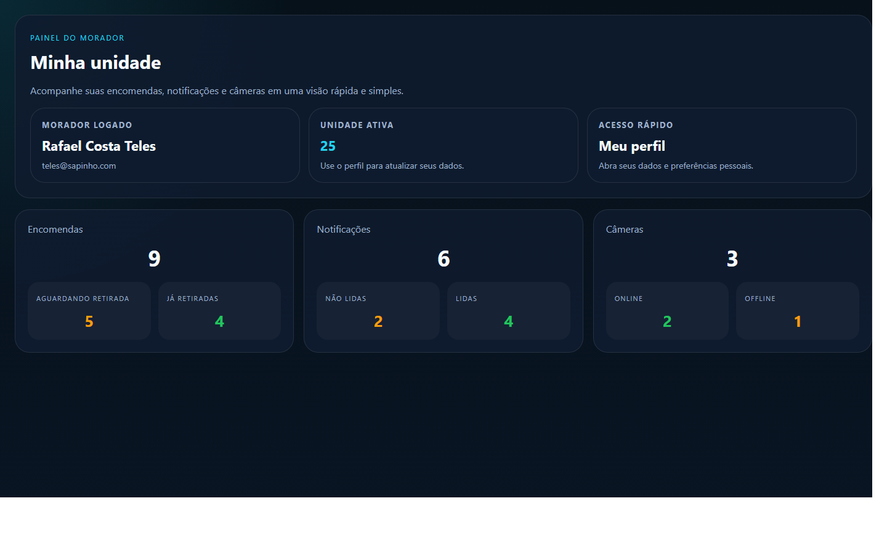
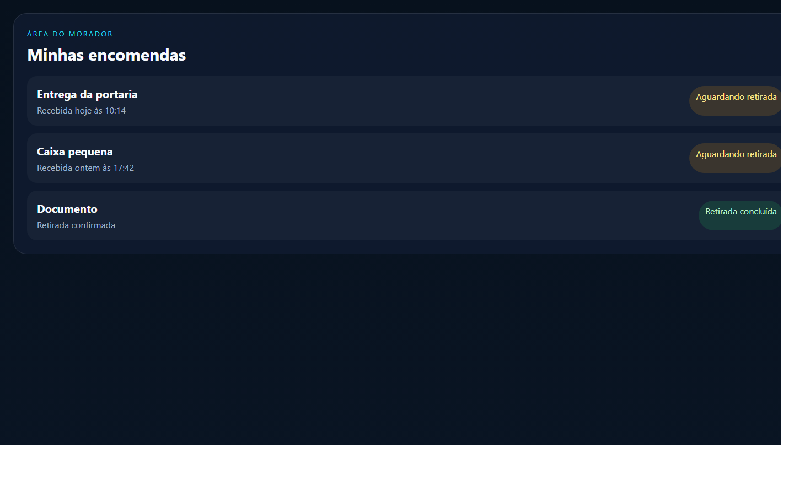

Manual do Usuário Morador
Portaria Web
Versão: 1.0
Data: 23/04/2026
Este manual foi preparado para orientar o uso do perfil Morador no portal web.
1. Visão geral
O perfil Morador permite acompanhar as informações da sua unidade de forma simples e rápida.
Com esse perfil, você consegue:
- consultar suas encomendas
- acompanhar alertas recebidos
- visualizar câmeras liberadas
- consultar e atualizar o perfil
- acompanhar veículos vinculados
Imagem 1
Adicionar captura do painel do morador aqui.
Arquivo sugerido:
docs/manual-usuario/imagens/morador-01-dashboard.png

2. Como entrar no sistema
1. Abra o navegador.
2. Acesse o endereço do sistema.
3. Informe seu e-mail.
4. Informe sua senha.
5. Clique em Entrar.
Se o acesso estiver correto, o sistema abrirá a sua área pessoal.
Imagem 2
Adicionar captura da tela de login aqui.
Arquivo sugerido:
docs/manual-usuario/imagens/morador-02-login.png

3. O que cada área faz
Dashboard
Mostra um resumo rápido da sua unidade.
Perfil
Permite consultar e atualizar seus dados pessoais.
Encomendas
Mostra as encomendas recebidas e o status de retirada.
Alertas
Mostra os alertas recebidos pelo morador.
Ao abrir o alerta, ele pode ser marcado como lido.
Câmeras
Mostra as câmeras liberadas para a sua unidade.
Veículos
Mostra os veículos vinculados ao seu cadastro ou unidade, quando esse recurso estiver disponível.
4. Passo a passo das tarefas principais
4.1. Consultar encomendas
1. Entre no sistema.
2. Abra a área Encomendas.
3. Veja as encomendas disponíveis.
4. Abra o item desejado para ver os detalhes.
4.2. Ver o código de retirada
1. Abra a encomenda desejada.
2. Veja o QR code ou o código de retirada.
3. Apresente a informação no momento da retirada.
Imagem 3
Adicionar captura da tela de encomendas aqui.
Arquivo sugerido:
docs/manual-usuario/imagens/morador-03-encomendas.png

4.3. Consultar alertas
1. Abra a área Alertas.
2. Veja os registros recebidos.
3. Abra o alerta desejado.
4. Leia os detalhes e veja a imagem, quando disponível.
4.4. Consultar câmeras
1. Abra a área Câmeras.
2. Veja as câmeras disponíveis para sua unidade.
3. Consulte a visualização liberada pelo condomínio.
4.5. Atualizar o perfil
1. Abra a área Perfil.
2. Revise seus dados.
3. Faça as alterações permitidas.
4. Clique em Salvar.
5. Boas práticas
- mantenha seus dados atualizados
- acompanhe regularmente as encomendas
- verifique os alertas recebidos
- confira se a unidade ativa está correta antes de consultar informações
6. Dúvidas comuns
O morador resolve alertas?
Não. O morador recebe a informação e acompanha o alerta. A tratativa operacional fica com a portaria.
O QR code substitui o código de retirada?
Sim. Na retirada, pode ser apresentado o QR code ou o código informado na tela.
O morador vê tudo do condomínio?
Não. O morador vê somente o que estiver liberado para sua unidade e para o seu perfil.
7. Anexos
- Imagem 1: dashboard do morador
- Imagem 2: login
- Imagem 3: encomendas